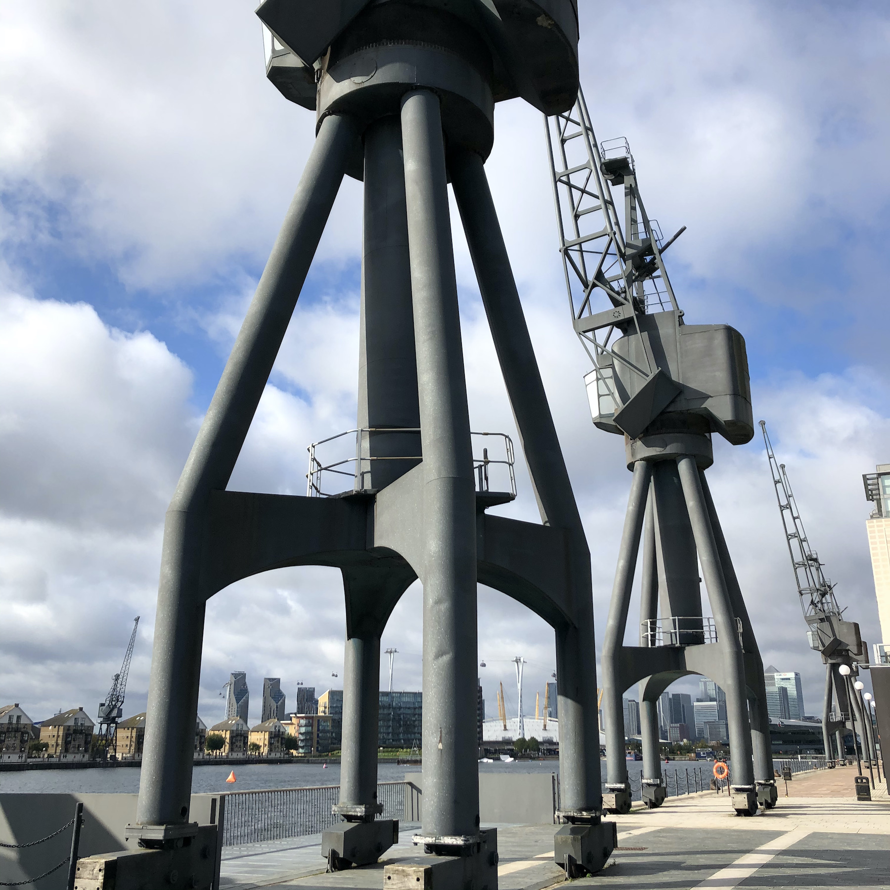
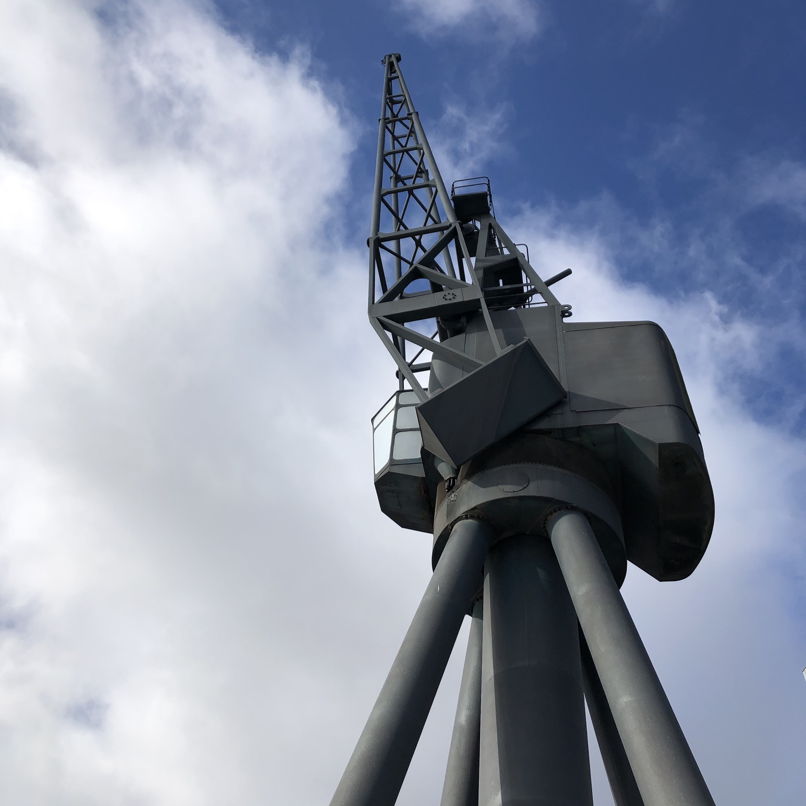
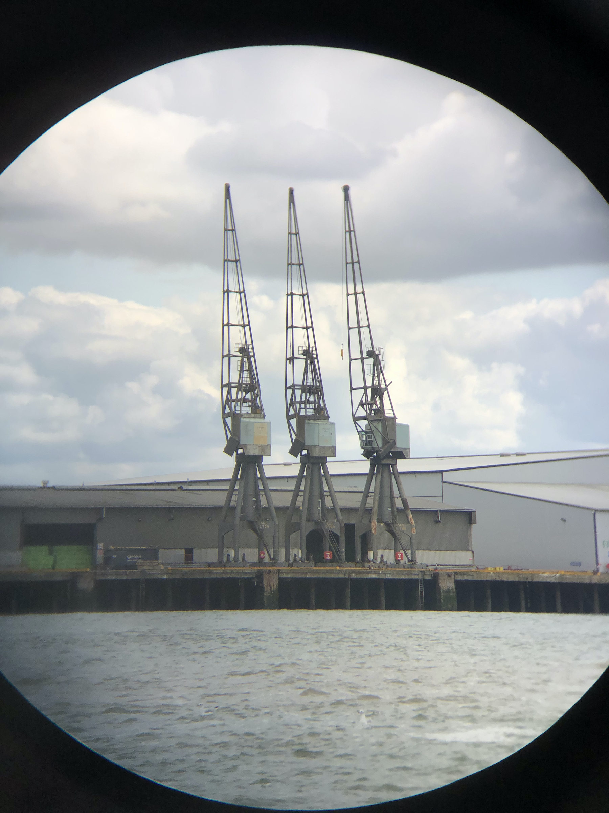
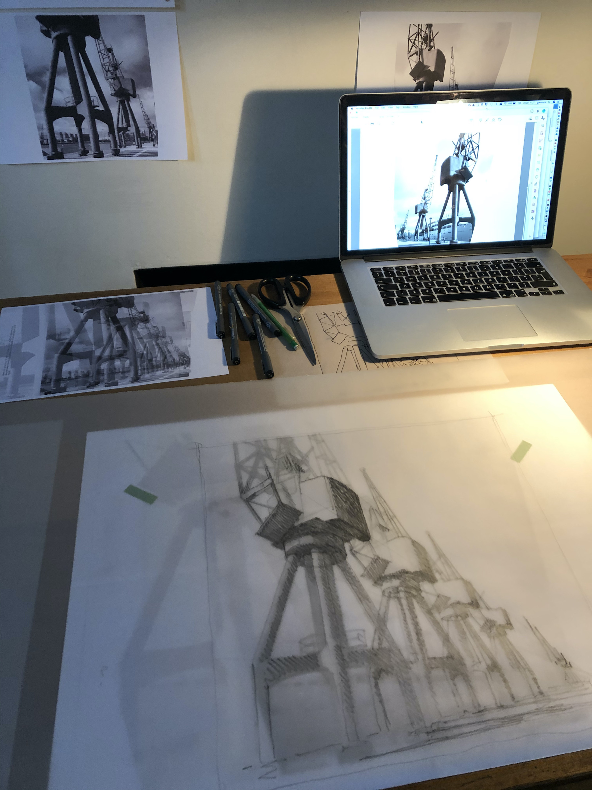
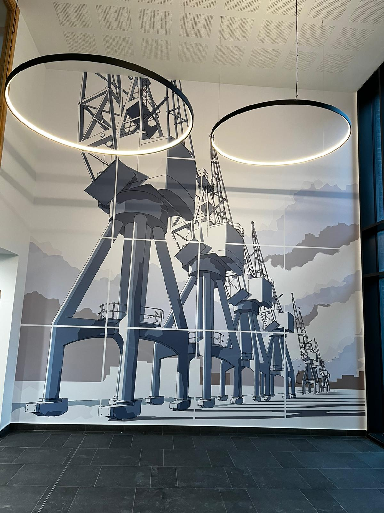

The Stothert and Pitt DD2 Crane
Wall Graphic for the Foyer of the new Penoyre & Prasad office building for Bath and North East Somerset Council on the site of the historic Stothert and Pitt crane factory in central Bath.

This large scale graphic image was drawn for display on the East wall of the foyer of Penoyre & Prasad's recently completed office building at Bath Quays South for Bath and North East Somerset Council. It is based on the famous Stothert and Pitt DD2 Crane which had been manufactured on this historic site in the middle of the 20th Century. The DD2 crane was used on docksides all over the world from the mid 1960's. This crane represents a high point in the company's achievements while at the same time, perhaps poignantly, was produced in the twilight of the company's long history. It is also important to me as the first Stothert and Pitt crane I came across in 1981 when working in London's Docklands for the newly formed LDDC on an urban design study of the Isle of dogs with the townscape expert and brilliant draftsman Gordon Cullen. The DD2 was the dominant crane type, standing in silent serried ranks along the dock edges of the by then abandoned West India and Millwall Docks. A fine and memorable sight.
The DD2 was a sophisticated level-luffing crane with unusually sleek lines, coming from the Stothert and Pitt design office led by Norman Kerridge Director of Research and Development. The crane went on to win a Council for Industrial Design Award in 1968. (See Citation from the Design Journal May 1968).
In this drawing I have set out to represent the strength of the cranes themselves and the energy and industry which created so many large engineering structures at the Stothert and Pitt works in the heart of Bath up until the 1980's.
The drawing occupies the full extent of the east wall of the foyer (approximately 5.8 x 6.1m) in 'supergraphic' form, printed onto paper and installed on the plastered wall. The line drawing with solid colour tone was prepared specifically for this large scale installation and is an assembly of 16 individual 'panes' each one drawn separately.
 
The remaining DD2 cranes at the Royal Docks London

and seen through binoculars at Sheerness Docks

Building up the image

In situ